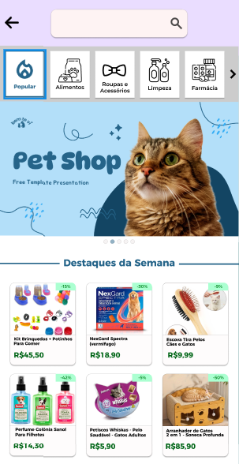
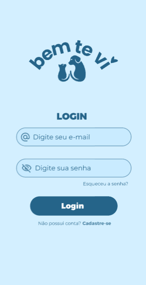

Projeto: Aplicativo PetShop
O aplicativo mobile de pet shop foi criado para facilitar o agendamento de serviços e a compra de produtos. Ele permite ao usuário agendar banhos, tosa e consultas veterinárias de forma rápida, além de acompanhar promoções e pedidos diretamente do celular.
Tecnologias Utilizadas
- React Native
- TypeScript
- Expo Snack
- Java
- React Navigation
- Figma
Links do Projeto
Minha Participação
Fui responsável pelas telas de agendamento e gerenciamento de serviços, além da navegação entre páginas e integração com o banco de dados simulado.
Capturas de Tela

